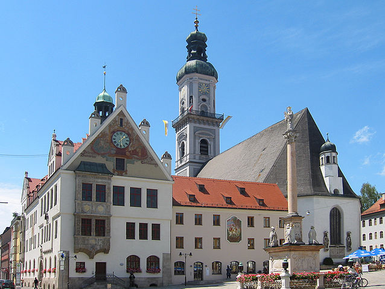

Accommodation
The school will take place at Bildungszentrum Kardinal-Döpfner-Haus in Freising, Bavaria. The Kardinal-Döpfner-Haus is a hotel conference centre with breakfast, lunch and dinner included in the cost. All available rooms are single-rooms only. The cost per person per night is :
- 40 Euros per night for students (Bachelor, masters or PhD)
- 80 Euros per night for all other participants
Once all participants have registered via the online form, we will e-mail details for paying the full fee in early September. We encourage all participants to either register online, or at least make their interest known to us by e-mail before the beginning of September.
Freising
Freising is a historic diocesan town in Bavaria, older than Munich and formerly an important religious centre in the Middle Ages. Fresing includes amongst other buildings, a town hall (pictured right) a Cathedral from the middle ages and the oldest still-working brewery in the world (at Weihenstephan Abbey). Freising also hosts some departments of the Technische Universität München and the Weihenstephan-Triesdorf University of Applied Sciences. Freising itself is approximately 40 minutes away from Munich centre via the regular S-bahn service.
The Kardinal-Döpfner-Haus is situated at the top of a hill approximately 10 - 15 minutes by foot from the centre. It has nice views over both Freising itself and across Munich Airport itself.